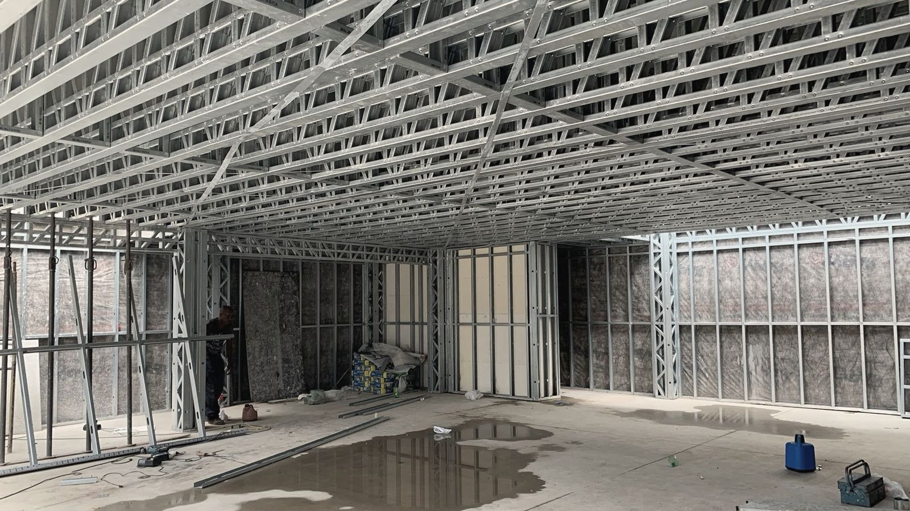

blog / imposto
CNO: a obra tem 30 dias para existir na Receita.
O Cadastro Nacional de Obras é o registro da construção na Receita Federal. O que é declarado ali define o INSS no fim.

Obra em andamentoo prazo conta do início
Resposta curta
Toda obra é inscrita no CNO em até 30 dias do início. Quem inscreve é o responsável pela obra: o proprietário, o dono da obra ou a construtora, na empreitada total.
Por que importa
Categoria, tipo, área e destinação são informados na inscrição. São esses campos que alimentam o cálculo do imposto.
O erro comum
Tratar a inscrição como formalidade. Perder o prazo sujeita o responsável a multa, e o que foi informado segue para o cálculo.
Fontes
- Instrução Normativa RFB nº 2.061, de 2021
- Instrução Normativa RFB nº 2.021, de 2021